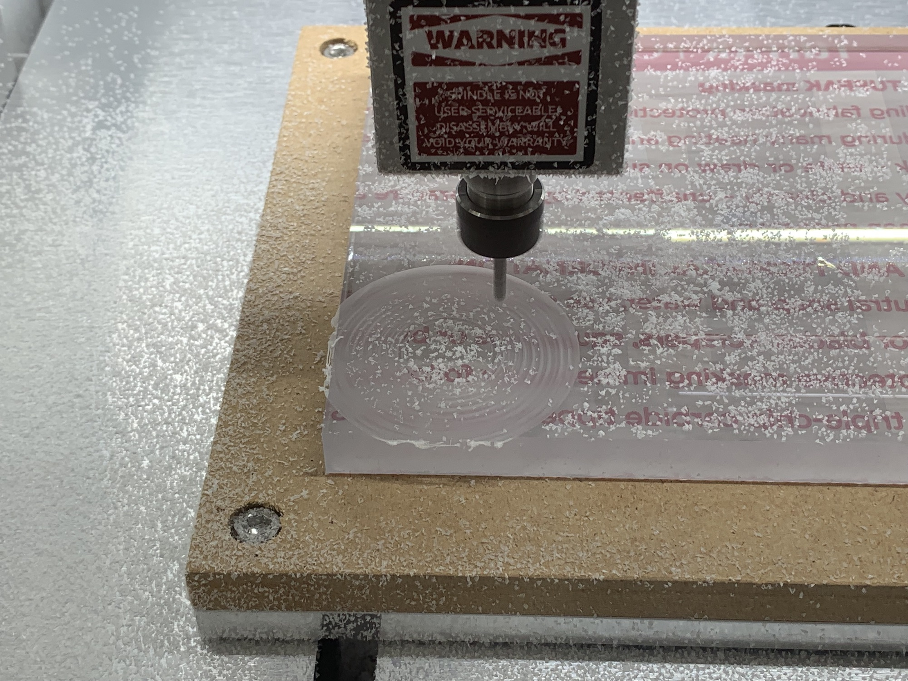
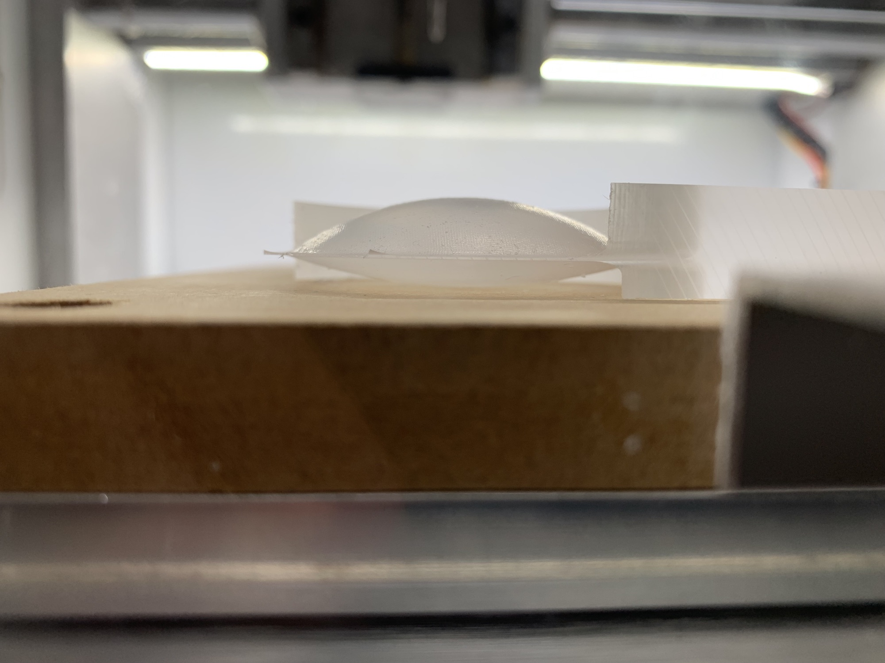
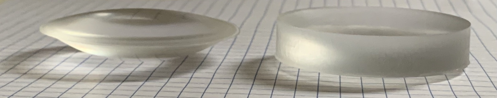
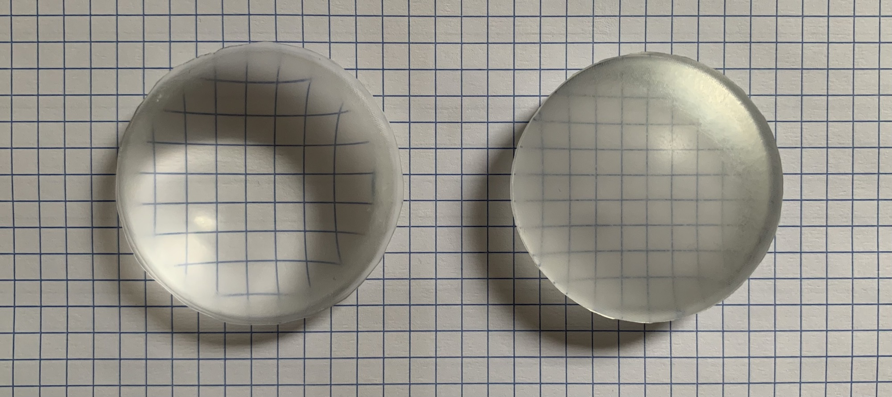
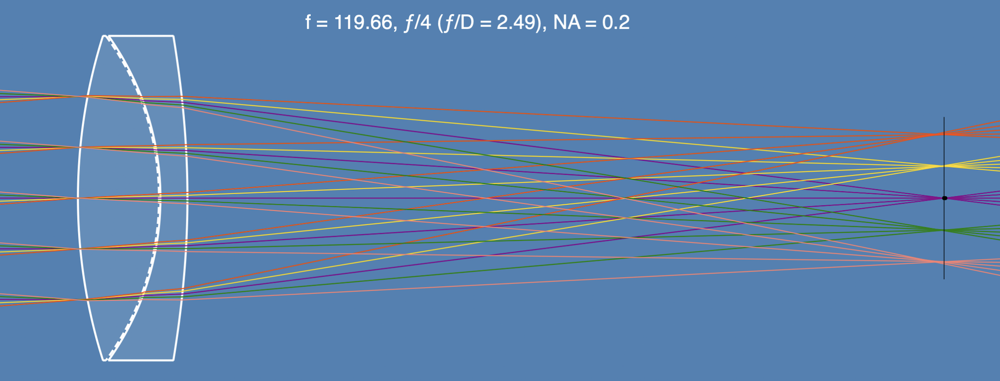
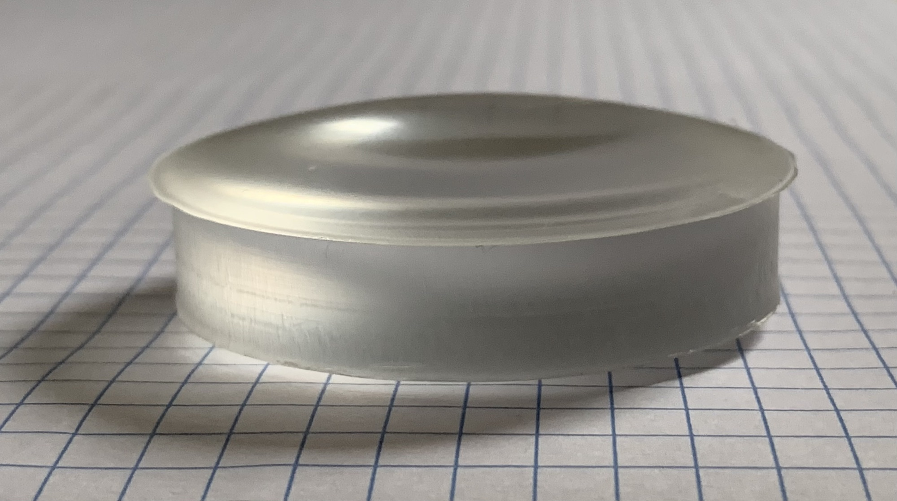
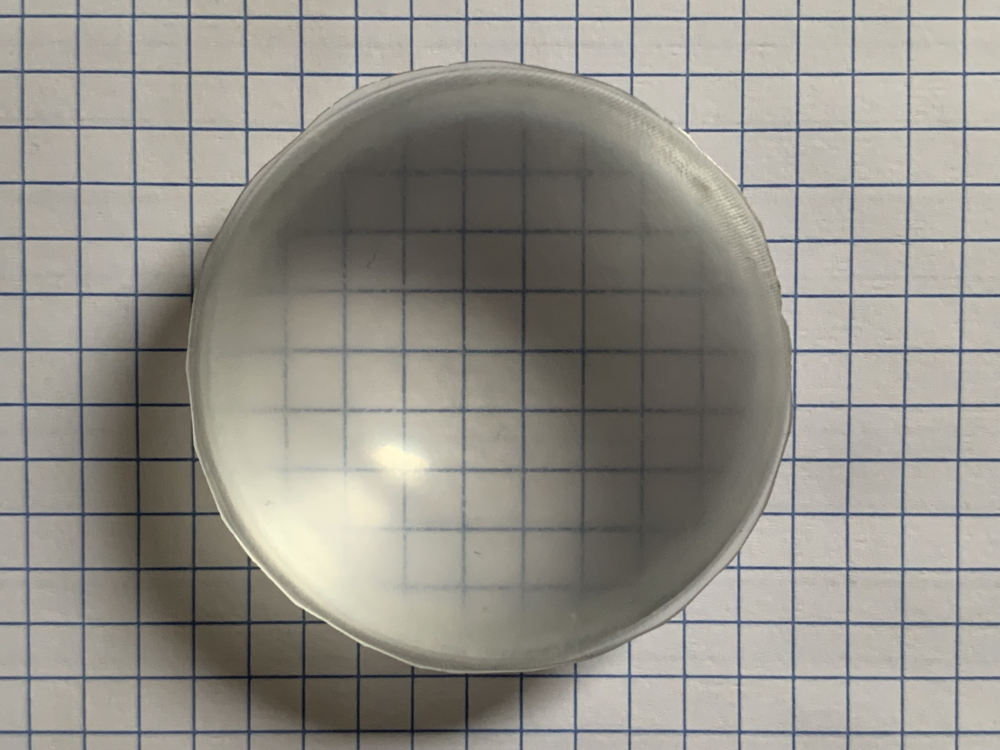
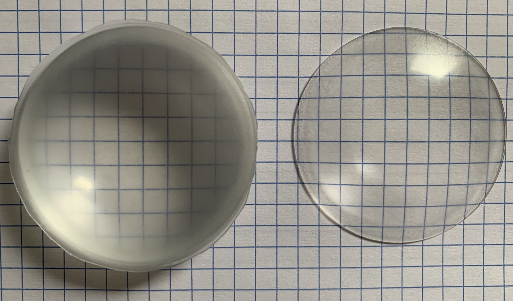

Milling an Achromatic Doublet From Acrylic and Polycarbonate
Alex Bock 2022-09-05
Overview
One of the primary limitations associated with lenses and telescopes I previously made using a 3D-printed mold and cast epoxy resin is chromatic aberration. Correcting chromatic aberration using an achromatic doublet requires a pair of lenses made of two materials that differ sufficiently in dispersion. (For traditional glass lenses, these are low-dispersion crown glass and high-dispersion flint glass.) The simplest choices for casting are epoxy resin, UV-cured acrylic resin, and polyester resin. I did not find any pair of these to provide an appropriate solution. Any of them could act as a stand-in for crown glass, but none of them have significantly higher dispersion like flint glass.
Evaluating the optical properties of common plastic materials, polycarbonate stands out as a good replacement for flint glass. Acrylic and polycarbonate are both readily available in the form of inexpensive, fully transparent sheets or blocks with any desired thickness. The simplest way to make a homemade achromatic doublet from scratch then appears to be milling lenses out of acrylic and polycarbonate stock.
Milling
I am using a 3-axis CNC mill with a 1/8" carbide ball end mill for both rough cuts and finishing on the lenses surfaces for both materials. Running two parallel finishing passes (one across X and one across Y) at 5% stepover has produced surfaces that are smooth enough to polish. The milled lenses are polished by hand using sandpaper, progressing from 400 to 3000 grit for acrylic and from 220 to 3000 grit for polycarbonate. Both are finished with cerium oxide slurry on a cotton ball to yield a polished surface. The acrylic lenses polish very easily, while the polycarbonate lenses require more effort. It may be worth finishing the latter at 1% stepover to improve the initial milled finish before polishing.
Milling double-sided lenses, particularly double convex lenses, is an interesting situation:
The double convex lens shown above required almost the entire thickness of the 1/2" acrylic stock it was cut from. The side shown facing down was cut first, then the acrylic was flipped and the second convex surface was cut. At the end of this process, the lens was attached to the stock by only a very thin layer remaining at the edge between the two surfaces. After the top surface was finished, the mill cut the lens free with one final circular pass.
After two-sided milling from acrylic and polycarbonate sheets and polishing, these two double-sided lenses were produced:
 The surface finish on the acrylic lens (left) is clearly better than the polycarbonate lens (right). Future polycarbonate lenses will require more polishing time.
Optical Design
While I was initially tempted to make a simple Littrow doublet, these would be best prepared with the two lenses sealed together with mineral oil in between. As I did not want to introduce this extra detail into the first attempt, I opted for an air-spaced Fraunhofer doublet instead. The surfaces were optimized to aspherical shapes as this process can produce aspherical lenses just as easily as spherical ones.
The assembled lens can be seen below. Note that the front element has a diameter of 50 mm while the rear element is only 48 mm.
 The haze visible when looking through the doublet is due to the insufficiently polished polycarbonate lens. Below, the achromatic doublet with 120 mm effective focal length is shown side-by-side with a 120 mm focal length plano-convex acrylic singlet produced by the same process. The doublet (left) should achieve the same clarity as the polished acrylic singlet (right) after improving the polish on the polycarbonate lens.
I expect that with some refinement, this process can be used to produce homemade multi-element camera lenses and telescope objectives.
Back to Index